第9章 学习与适应 Learning and Adaptation
以技能库、经验库与进化循环实现非参数化的持续改进，让智能体不改权重也能越用越好。
一句话定义：让智能体把运行中的经验转化为可复用的提示、技能与记忆工件，并通过生成-评估-选择的循环使自身行为随使用持续变好。 解决什么问题：智能体反复犯同类错误、有效解法无法沉淀、提示词靠手调试收敛慢、微调成本高且不可审计 ｜ 适用场景：有可靠评估信号的任务（编码、有测试的工程问题、可量化指标的系统优化）、高频重复任务、需要长期复利的助手类产品 ｜ 核心机制：经验捕获 + 工件化存储（技能库/经验库）+ 检索复用 + 进化循环（生成、评估、选择、变异）｜ 代价：依赖评估器质量（会被"攻破"）、有自我强化与经验污染风险、进化循环的调用成本不可忽略。
9.1 模式概述
9.1.1 宏观视角：智能体学习的两条路线
机器学习意义上的"学习"指改参数，但智能体的学习绝大多数不发生在权重里。把视角拉高，智能体变好有两条路线。参数化路线：用微调、强化学习改模型权重，改动的是能力本身，代价是训练数据、算力与一轮完整的发布流程，产物是不透明的权重。非参数化路线：不改权重，改的是模型外部的文本工件——系统提示、少样本示例、技能代码库、经验记忆、工作流程序列。这些工件可读、可审计、可版本化、可随时回滚，写入成本低到一次调用就能完成。
智能体工程的重心明显偏向非参数化路线，原因有三。第一，反馈信号天然存在且廉价：一次任务跑完，成功与否、错误日志、用户修正都是现成的学习信号，不需要标注团队。第二，学习单元是自然语言或代码，可以直接被人审查——"它学到了什么"以文本形式摆在库里，这与权重更新有本质的治理差异。第三，学习即时生效：新技能入库下一次检索即可用，不用等训练与部署。参数化路线并没有出局——当非参数化工件积累到足够规模，把它们蒸馏进微调数据（把成功的提示+上下文+输出变成训练样本）是自然的混合路径——但在智能体的日常迭代里，本章聚焦非参数化路线。
按载体分，非参数化学习有四种形态：提示的进化（DSPy 把提示当作编译产物自动优化）、技能的积累（Voyager 式技能库，学到的技能是经验证的可执行代码）、经验的沉淀（第 4 章 Reflexion 的情景记忆向前一步，成为跨会话经验库）、程序的进化（AlphaEvolve 式进化循环，直接演化代码工件本身）。四者共享同一个骨架：捕获经验 → 工件化 → 检索复用 → 反馈修正。
9.1.2 核心机制：它如何工作
所有形态的共同骨架是一个闭环。捕获：从任务执行中提取反馈——显式的（测试通过/失败、指标分数）或隐式的（用户改写了答案、会话被放弃）。工件化：把经验固化成可检索的单元，关键是带结构与元数据：什么情境下、什么做法、结果如何、教训是什么，而不是一段无上下文的日志。复用：下次遇到相似情境时按嵌入相似度或结构化条件检索，把相关经验注入上下文。修正：工件本身也受反馈约束——被复用后效果差的技能降权或改写，错误的经验被后续证据覆盖。
进化循环是这个骨架的强化版：不满足于"记录已有经验"，而是主动生成变体（变异）、用评估器批量打分（选择）、保留最优并继续变异，把搜索做成一个自动化循环。它能否工作的前提是存在廉价、自动、可信的评估器——这也是本章最重要的判据，9.5 节会展开。

9.1.3 与相邻模式的关系与组合
学习与适应是若干模式的"时间维度"扩展。反思模式（第 4 章）在单次任务内生成语言化反馈，学习模式把这些反馈持久化为跨会话工件——Reflexion 的情景记忆正是两者的衔接点。记忆管理（第 8 章）提供存储与检索基础设施，经验库在工程上就是一种带信任等级的记忆。自我纠错（评估-修复循环）提供单次闭环，进化循环把它放大为跨代的搜索。组合上的典型形态：编码智能体 = 自我纠错的迭代修复 + 测试评估器 + 技能库沉淀；优化型智能体 = 进化循环 + 确定性评估器 + 进化数据库。

9.2 源起：它从哪里来
这条路线的骨架来自 1975 年 John Holland 的遗传算法：它把自然选择抽象为“种群+变异+适应度”的可执行搜索。此后五十年它一直缺一个好用的变异算子——位翻转太盲目；直到 LLM 让变异升级为有语义的改写，闭环才跑通。2023 年 3 月 Reflexion 证明语言化自我反思可以当学习信号；同年 5 月 Voyager 把成功操作固化为可检索的技能代码；2023 年 10 月斯坦福的 DSPy 主张提示词应由编译器从数据自动优化；2024 年 1 月 AlphaCodium 给出测试驱动的编码流程；2025 年 5 月 Google DeepMind 的 AlphaEvolve 汇成完整闭环并进生产，开源社区的 OpenEvolve 随即复刻了它。
| 年份 | 事件 | 提出者/机构 | 出处 |
|---|---|---|---|
| 1975 | 遗传算法：进化搜索的方法论起点 | John Holland（密歇根大学） | Adaptation in Natural and Artificial Systems |
| 2023.3 | Reflexion：语言化反思的在线学习 | Noah Shinn 等 | arXiv:2303.11366；NeurIPS 2023 |
| 2023.5 | Voyager：技能库终身学习原型 | Guanzhi Wang 等（NVIDIA/Caltech 等） | arXiv:2305.16291 |
| 2023.10 | DSPy：提示词作为编译产物 | Omar Khattab 等（斯坦福） | arXiv:2310.03714；ICLR 2024 |
| 2025.5 | AlphaEvolve：进化编码智能体进生产 | Google DeepMind | 官方博客；arXiv:2506.13131 |
9.3 发挥的作用：为什么重要
第一，复利效应。不带学习的智能体第 1000 次执行与第 1 次没有区别；带学习的智能体把每次执行变成训练数据，边际成本递减、边际质量递增——这是产品层面真实的护城河。第二，免训练的适应速度。环境变了、接口换了、新坑出现了，改一个技能条目或经验条目即时生效，不需要数据集、训练与发布。第三，可审计的学习。学到的每一条经验都是文本，可以审查"它最近学到了什么"，错误经验可以定点删除——与不可解释的权重更新相比，治理成本天差地别。第四，系统级改进的实证。AlphaEvolve 的结果证明这套闭环不只在玩具基准上有效：它为 Google 的 Borg 数据中心调度找到的启发式平均回收约 0.7% 的全球算力并已在生产运行一年以上，把 Gemini 训练中一个关键矩阵乘 kernel 提速 23%（整体训练时间减约 1%），甚至改进了支撑其自身模型训练的基础设施——智能体改进自己赖以运行的系统，这是自我改进叙事第一次获得工程注脚。
9.4 实际应用与案例
测试驱动的编码智能体。 按 AlphaCodium 流程：先让模型反思问题、推理公共测试用例的输入输出关系，再生成 AI 补充测试覆盖边界，然后"生成→运行→看报错→修复"迭代。关键设计点：生成补充测试比直接生成完整解法容易得多，先用廉价信号铺路；已通过的公共测试作为"锚点"，后续修改不得打破。
技能库式助手。 仿 Voyager：把每次成功完成的工作（一段 SQL、一个宏、一段数据处理脚本）经人工确认或自动验证后存入技能库，带描述与适用条件，相似任务出现时检索复用。关键设计点：技能必须"执行通过才入库"，未验证的候选技能单独存放。
提示程序优化。 用 DSPy 把手写提示的管线改写为声明式模块，用小标注集自动编译出少样本示例与指令。关键设计点：优化器需要度量函数（metric），把"答案对不对"写成代码；换底层模型后重跑编译即可再适配。
客服经验库复利。 每个成功解决的工单沉淀为"症状→解法→适用条件"条目，失败工单沉淀为"这类问题不要这样做"。关键设计点：条目要有信任等级（人工审核 > 自动沉淀），并定期用新工单回测旧条目的命中率。
系统与调度优化。 仿 AlphaEvolve 对数据中心调度的用法：任何"方案可自动评估"的工程问题（缓存策略、分片规则、正则/查询改写）都可以放进进化循环。关键设计点：评估器用生产镜像回放或沙箱压测，绝不能拿线上流量当第一个实验场。
数学与算法发现。 面向有明确判定标准的开放问题（组合构造、算法复杂度），进化循环产出候选构造、评估器机械验证。关键设计点：问题必须能形式化为可执行的评分函数，这是 AlphaEvolve 选题的第一标准。
真实世界实例
Google DeepMind AlphaEvolve。 2025 年 5 月 14 日官方发布的进化编码智能体：为 Google Borg 集群调度进化出的机器排序启发式平均持续回收约 0.7% 的全球算力，公告时已在生产运行超一年；用 48 次标量乘法完成 4×4 复矩阵乘法，刷新 Strassen 1969 年以来 56 年的纪录；在 50 多个开放数学问题上约 20% 改进已知最优；把 Gemini 训练的关键矩阵乘 kernel 提速 23%（约省 1% 总训练时间）。来源：DeepMind 官方博客与技术报告 arXiv:2506.13131。
AlphaCodium。 Codium AI（现 Qodo）2024 年 1 月发表的测试驱动编码流程：先让模型反思问题、推理公共测试，再生成 AI 补充测试并迭代修复——在 CodeContests 验证集上把 GPT-4 的 pass@5 从单个精心设计提示的 19% 提升到 44%（官方论文摘要原文）。来源：arXiv:2401.08500。
Cursor 的规则沉淀机制。 Cursor 编辑器把团队约定沉淀为 .cursor/rules/*.mdc 持久化规则文件，提供四种生效方式（总是注入/智能判断/按文件模式匹配/@手动引用），规则随代码入库进 git，"Agent 反复犯的错"被固化为一条规则后全团队即时受益——这正是本章"经验工件化 + 检索复用"在开发者工具中的落地形态。来源：Cursor 官方 Rules 文档。
9.5 深度讲解
9.5.1 非参数化与参数化的取舍
| 维度 | 非参数化（提示/技能/经验） | 参数化（微调/RL） |
|---|---|---|
| 反馈成本 | 单次运行即产生 | 需成规模的标注/交互数据 |
| 生效速度 | 即时（写库即用） | 一轮训练+发布周期 |
| 可审计性 | 文本工件，可读可回滚 | 权重不可读，依赖评测代理 |
| 能力上限 | 受基座模型能力封顶 | 可改变能力本身 |
| 边际成本 | 每条经验便宜，库大了检索与维护变贵 | 数据与算力贵，摊薄后单能力便宜 |
| 失效方式 | 经验污染、检索漂移 | 灾难性遗忘、过拟合 |
选型的经验法则：改"怎么用模型"选非参数化，改"模型本身会不会"选参数化。提示层面能解决的表达问题（格式、流程、领域知识注入、错误规避）不要动权重；当非参数化工件积累出稳定模式（同一类提示修改反复出现）、或需要把能力下沉到更小更便宜的模型以降本时，再把工件蒸馏成微调数据——两条路线是接力关系而非对立关系。 这条路线的收益有公开数字背书。DSPy 官方论文（arXiv:2310.03714，ICLR 2024）报告：编译后的程序相对标准少样本提示，GPT-3.5 的质量提升一般超过 25%，llama2-13b-chat 超过 65%；相对专家手写示例管线，GPT-3.5 最高提升 5%~46%；更实用的是能力下沉——把程序编译到 770M 参数的 T5 与 llama2-13b，质量就能与依赖专家提示链的 GPT-3.5 方法相当，非参数化工件是把能力搬到便宜模型上的最短路径。Google DeepMind 的 OPRO（arXiv:2309.03409，ICLR 2024）用 LLM 当优化器，优化出的提示在 Big-Bench Hard 上比人工提示最高提升 50%，但在 GSM8K 上最高只有 8%——同一方法在不同任务上的收益相差六倍，自动优化不是点石成金，任务本身有没有提示空间才是分母。
9.5.2 进化循环在智能体中的形态
进化循环有四个环节，每个环节都有工程要点。生成：AlphaEvolve 用双模型 ensemble——快速模型（Gemini Flash）大量产出想法保证搜索广度，强模型（Gemini Pro）对有希望的候选做深度改写，相当于"广撒网+重点培养"的成本最优组合。变异的形式很重要：让 LLM 输出对现有代码的定向修改（diff/替换块），比每次从头重写更容易保留已验证的部分。评估：这是整个循环的命门。评估器必须廉价（每次评估几分钟内）、自动（无人参与）、可信（评分与真实目标一致）。AlphaEvolve 的评估流水线先跑小样例快速淘汰废品，再做完整评分，甚至让另一个 LLM 评估难以程序化的属性（可读性等）。选择：进化数据库不是简单 top-k，AlphaEvolve 借鉴 MAP-Elites 一类质量-多样性思想并配合岛屿模型——既保留最优个体，也保留不同特征维度上的差异化个体，防止种群过早收敛到单一套路。终止：满分即停、代数预算、调用预算三者取严，进化循环没有预算控制就是一台烧钱机。
9.5.3 技能库与自动课程
Voyager 的两个设计值得单独拆解。其一是技能的验证门槛：只有执行成功（Minecraft 中任务达成）的代码才获得入库资格，技能天然可信；每条技能带文档字符串描述功能，检索靠查询与描述的嵌入相似度，而不是全文匹配。其二是自动课程：让智能体自己问自己"按我当前的能力，下一步学什么有点挑战但可达"，环境反馈自动判卷。课程机制解决的是技能库冷启动与停滞问题——没有课程，智能体会重复练习已会的东西；课程让库的生长沿着难度曲线推进。迁移到业务场景：技能库型产品的课程可以由"高频失败任务"驱动——失败聚类分析自动生成下一个要沉淀的技能主题，这与 Voyager 的自动课程在结构上同构。
9.5.4 从经验回放到经验库
Reflexion 的情景记忆只服务单次任务（几轮尝试之间），把它变成跨会话资产需要跨过三道坎。抽象层级：单次反思是"这次我错在哪"，经验库条目必须是"这类情境下应如何"——要再抽一层模式，条目 schema 建议：触发条件/情境、采取的行动、结果、教训、置信度、来源。信任分级：自动沉淀的经验初始置信度低，被复用且成功的次数累积置信度，人工审核直接给高置信；检索时低置信经验只作参考、高置信经验可直接影响行为。防腐：经验库与记忆库一样需要去重、合并与过期（第 8 章的机制全部适用），此外还要防"回音室"——智能体检索自己的经验、按经验行动、又把行动结果写成新经验，若评估信号有偏，错误会在库里自我强化。打断回音室的手段是引入外部信号（真实用户反馈、独立评审）定期校准。
9.5.5 失效模式与反模式
评估器被攻破（Goodhart 陷阱）：进化循环是最强力的 Goodhart 放大器——它不优化你以为的目标，只优化你的评分函数。测试覆盖不全时，进化会找到"通过测试但错误"的解；评分函数有代理缝隙，进化一定钻进去。对策：评估器分层（快筛+全量）、定期人工抽查高分个体、评估集与选择集分离。自我强化回音室：如上所述，无外部信号的自评闭环会让偏见固化。库膨胀与检索退化：技能/经验条目无限增长后，相似条目互相稀释，检索精度下降，旧技能与新环境不符却不自知。对策：容量上限、定期合并去重、复用失败即降权。环境漂移：经验是历史的快照，接口升级、业务规则变化后，旧经验从资产变成误导源。对策：经验条目带时间与适用范围，关键条目复用前做低成本验证。成本失控：进化循环、批量评估、技能验证都在放大调用量。对策：调用预算硬编码、廉价评估器前置过滤、高分个体缓存复用。 需要澄清一个最常见的误解：大家以为经验库“越攒越聪明”，工程事实是：没有防腐设计的经验库会朝评分函数漂移，而不是朝真实目标漂移。进化循环是最强力的 Goodhart 放大器——它只优化你写下的评分函数，不优化你以为的目标；而自评闭环（检索自己的经验 → 按经验行动 → 把结果写回经验）会把评估器的每一次偏差都复利放大，最终库里高分经验与真实目标渐行渐远，回音室里无人察觉。这不是理论担忧：评分函数与真实目标的缝隙在哪，进化就把解集推到哪。所以经验库的第一运维指标不是“条目数”，而是复用成功率——复用后失败的经验必须降权或改写；评估集要定期从真实流量重采样；外部信号（用户反馈、独立评审）是唯一能打断回音室的锚。
9.5.6 何时不要用
没有可靠评估器的任务（开放创意、主观审美、一次性的复杂决策）不适合进化循环——没有可信的适应度函数，循环只会收敛到噪声。任务量太小的场景不值得建经验库——复利需要足够多的复利周期。环境每周剧变的业务，经验还没沉淀就已过期，学习机制的成本收不回。这三类场景的正确选择是：把资源投在更好的单次执行（更强的模型、更好的提示），而不是投在学习机制上。
9.5.7 怎么用：运用判断
适用信号：①任务存在廉价、自动、可信的评估器（测试、精确匹配、确定性指标）；②同类任务高频重复（每天几十次以上，复利有周期可乘）；③失败模式重复出现且能写成条目（同一类坑踩两次就该沉淀）。三者缺一，学习机制的成本收不回。
边界条件：标注样例少于约 20 条时编译优化容易过拟合小评测集；评分函数有代理缝隙（测试覆盖不全、代理指标失真）时进化一定钻进去；环境每周剧变的业务，经验未沉淀已过期。
| 维度 | 手写提示 | 编译优化（DSPy 类） | 微调 |
|---|---|---|---|
| 门槛 | 即时但靠手感 | 需小标注集 + 度量函数 | 需成规模数据与训练 |
| 收益 | 基线水平 | 相对少样本提升 25%~65% | 可改变能力本身 |
| 边际成本 | 每次改动纯人工 | 一次编译几十~几百次调用 | 一轮完整训练与发布 |
| 适用 | 原型、一次性任务 | 稳定管线的持续优化 | 非参数化到顶后的能力下沉 |
落地三步：①把任务的评估器写成代码（哪怕只有 20 个标注样例的精确匹配），这是整个闭环的门票；②挑失败最多的一类任务，用本章进化循环或 DSPy 的 BootstrapFewShot 跑一次完整编译，记录每代得分曲线验证收益真实；③把跑赢的提示词固化为版本化工件入库，附失败样例与适用条件，每月用新流量回测一次，复用成功率跌破阈值就回滚。
9.6 工程落地：核心源码与讲解
9.6.1 框架无关核心源码（按序拼接即完整可运行）
以下四个片段按原文件顺序实现最小可用版“技能库 + 确定性评估器 + 进化循环”，进化对象是一个金额抽取提示词：确定性评估（精确匹配）是循环成立的前提，另带调用预算、满分即停、变异失败降级与库容量防膨胀。按序拼接（片段 1→4）即完整可运行程序。
片段 1／4：基座与统一接口。
"""第 9 章 核心源码：技能库 + 确定性评估器 + 进化循环（按序拼接 4 片段可运行）。"""
import os, re
from dataclasses import dataclass
from openai import OpenAI
client = OpenAI(base_url=os.environ.get("AGENT_LLM_BASE_URL", "https://api.openai.com/v1"),
api_key=os.environ["AGENT_LLM_API_KEY"])
MODEL = os.environ.get("AGENT_LLM_MODEL", "gpt-4o-mini")
def llm(prompt: str, system: str = "", temperature: float = 0.3) -> str:
"""调用 OpenAI 兼容接口；失败只抛异常，由调用方决定降级。"""
msgs = ([{"role": "system", "content": system}] if system else [])
msgs.append({"role": "user", "content": prompt})
resp = client.chat.completions.create(
model=MODEL, messages=msgs, temperature=temperature)
return resp.choices[0].message.content or ""
▸ 代码怎么读：基座与全书统一——llm() 的任何异常都向上抛，降级决策权交给调用方。本程序的灵魂其实在下一个片段：评估器必须是确定性的（这里是精确匹配），这是进化循环能成立的前提；没有确定性判卷，“进化”就只是随机游走。读者替换任务时，先替换的就是片段 2 里的评测集与判卷逻辑，本片段原样保留。
片段 2／4：评估器与评测集。
# 评测集：小而硬（千分位/前后缀干扰/多数字干扰），且与选择逻辑隔离，防 Goodhart
EVAL_SET: list[tuple[str, int]] = [
("订单总额 428 元，已支付", 428),
("实付199元", 199),
("金额：¥3,200（含税）", 3200),
("退款 15 元后的余额是 985 元", 985),
("本月消费合计 12,088元", 12088),
]
def parse_amount(reply: str) -> int | None:
"""从模型回复解析整数金额；解析失败返回 None（按答错计）。"""
m = re.search(r"\d[\d,]*", (reply or "").replace(" ", ""))
return int(m.group(0).replace(",", "")) if m else None
def evaluate(prompt: str) -> tuple[float, list[str]]:
"""评估提示词：返回（得分 0~1, 失败样例）。LLM 异常按答错计。"""
score, fails = 0.0, []
for text, gold in EVAL_SET:
try:
got = parse_amount(llm(f"{prompt}\n\n输入：{text}\n只输出整数金额。",
temperature=0.0))
except Exception:
got = None # 调用失败按错计，绝不重试到通过为止
if got == gold:
score += 1.0 / len(EVAL_SET)
else:
fails.append(f"「{text[:16]}」期望{gold}实得{got}")
return score, fails
▸ 代码怎么读：EVAL_SET 只有 5 条，但条条踩坑（千分位、前后缀干扰、多数字干扰）——小而硬胜过大而软。评估集与选择集必须分离，这是防 Goodhart 的第一道闸；evaluate 里 LLM 异常按答错计分，绝不“重试到通过为止”，否则评估器就开了后门。parse_amount 用最宽松的正则抓整数，解析失败按错计——评分函数必须覆盖“模型输出了但没按格式”这个最常见的真实失败。
片段 3／4：技能库与变异算子。
@dataclass
class Skill:
"""一条技能 = 经验证的提示词 + 得分 + 失败记录。"""
name: str
prompt: str
score: float
note: str = ""
class SkillLibrary:
"""技能库：容量上限防膨胀，按得分排序供检索复用。"""
def __init__(self, capacity: int = 20) -> None:
self.skills: list[Skill] = []
self.capacity = capacity
def add(self, skill: Skill) -> None:
"""双门槛：不完美且重复的不收录；超容量只留最优。"""
if skill.score < 1.0 and any(s.prompt == skill.prompt for s in self.skills):
return
self.skills.append(skill)
self.skills.sort(key=lambda s: -s.score)
self.skills = self.skills[: self.capacity]
POP_SIZE, MAX_GEN = 3, 3 # 每代变异数与代数预算（另有满分即停，三重止损）
def mutate(prompt: str, fails: list[str]) -> str:
"""LLM 语义变异：定向修复失败样例；变异失败原样保留（不断环）。"""
fails_txt = "\n".join(fails) or "（无失败样例，请提升鲁棒性）"
try:
out = llm("下面这个提示词在部分样例上失败：\n" + prompt
+ "\n失败情况：\n" + fails_txt
+ "\n改写提示词以修复失败，保持简短。只输出新提示词本身。",
system="你是提示词工程专家。", temperature=0.7)
return out.strip() or prompt
except Exception:
return prompt
▸ 代码怎么读：SkillLibrary.add 的双门槛（不完美且重复的不收录、容量上限只留最优）把 9.5.5 的“库膨胀”对策直接写进数据结构。mutate 把失败样例喂回给 LLM 做定向改写而非从头重写——语义变异保留已验证部分，这正是 LLM 相对随机位翻转的本质优势（9.2 说的“五十年之缺”由此补上）；变异失败原样返回：退化但不断环。变异用 0.7 的温度留探索空间，评估用 0.0 保持判卷稳定。
片段 4／4：进化主循环与止损。
def evolve(seed: str, library: SkillLibrary) -> Skill | None:
"""主循环：逐代评估种群，满分即停；否则选最优变异出下一代。"""
population, best = [seed], None
for gen in range(MAX_GEN):
scored: list[tuple[str, float, list[str]]] = []
for p in population:
s, fails = evaluate(p)
skill = Skill(f"amount-extract-g{gen}", p, s, "; ".join(fails[:2]))
library.add(skill)
best = skill if best is None or s > best.score else best
scored.append((p, s, fails))
if best is not None and best.score >= 0.999: # 满分提前停止，省预算
break
scored.sort(key=lambda x: -x[1])
top_prompt, _, top_fails = scored[0] # 截断式选择：只留最优出下一代
population = [mutate(top_prompt, top_fails) for _ in range(POP_SIZE)]
return best
if __name__ == "__main__":
winner = evolve("从输入文本提取订单金额，只输出一个整数（单位元）。", SkillLibrary())
if winner is None:
raise SystemExit("进化未产出任何可用技能") # 诚实失败，不硬凑结果
print("最优技能得分：", winner.score, "\n提示词：", winner.prompt,
"\n失败记录：", winner.note or "无")
▸ 代码怎么读：evolve 的止损是第一优先级：代数上限 MAX_GEN、种群规模 POP_SIZE、满分 0.999 提前停——没有预算的进化循环是烧钱机。截断式选择（只留最优出下一代）是刻意简化，生产上应按 9.5.2 换成质量-多样性选择防过早收敛。winner 为 None 时显式退出——进化无产出是真实可能，诚实失败好过硬凑结果。读者明天就能跑：把 EVAL_SET 换成自己任务的 20 个标注样例即可。
9.6.2 框架差异速览
同一“经验工件化 + 自动优化”能力在主流框架中的对应物（版本迭代快，接口名以官方文档为准）：
| 框架/项目 | 核心抽象 | 与本章骨架的差异 |
|---|---|---|
| DSPy | Signature + 优化器 | 声明输入输出签名，BootstrapFewShot/MIPROv2 编译指令与少样本示例 |
| OpenEvolve | 进化数据库 + LLM ensemble | AlphaEvolve 循环的开源复刻，对任意可评估函数演化代码工件 |
| TextGrad | 文本反馈即“梯度” | 对复合系统的任意文本节点做“反向传播”式批评改写 |
| Voyager 式技能库 | 技能代码 + 嵌入检索 | 技能执行通过才入库，按任务描述检索复用，配自动课程推进难度 |
9.6.3 生产化改造清单
- 错误处理：评估调用失败按错误计分而非重试到通过；进化无产出时显式退出并保留最优种子。
- 预算控制：代数、种群、总调用数、总费用四重预算硬编码；满分即停。
- 评估器治理：评估集与选择集分离；高分个体定期人工抽查，防 Goodhart。
- 并发评估：种群内并行调用（线程池/asyncio），评估阶段是循环的延迟大头。
- 缓存：相同提示词+样例的评估结果缓存；进化重跑不重复计费。
- 可观测：每代记录最优/平均得分、失败样例、变异来源，进化轨迹可回放可审计。
- 技能库治理：容量上限、去重合并、复用失败自动降权、定期用新评测集回测全库。
- 成本控制：廉价评估器前置快筛；变异用小模型、终选用强模型的双档组合。
9.7 概览 / 核心要点 / 结论
本章小结
智能体的学习不必然发生在权重里。非参数化路线把经验固化为提示、技能、经验与程序四类文本工件，用"捕获—工件化—复用—修正"的闭环换取即时生效、可审计、低成本的持续改进；进化循环在此之上加入主动搜索，用生成-评估-选择-变异把改进自动化。从 Holland 的进化计算骨架，到 Reflexion 的语言化反馈、Voyager 的技能库、DSPy 的提示编译，再到 AlphaEvolve 在数学开放问题与 Google 生产系统上的双重兑现，这条路线已经完成了从原型到生产的关键一跃。它的一切收益都以一个前提为抵押：存在廉价、自动、可信的评估器——守护这个前提，是学习型智能体系统的第一职责。
核心要点
- 非参数化学习改工件不改权重：即时生效、可读可审计、可回滚，是智能体迭代的首选路线。
- 经验必须工件化：情境、行动、结果、教训、置信度、来源，六要素缺一不可。
- 进化循环的命门是评估器：廉价、自动、可信三条件缺一，循环就在优化噪声。
- 变异要用有语义的 LLM 改写（diff 式），保留已验证部分；双模型 ensemble 平衡广度与深度。
- 选择要兼顾质量与多样性（MAP-Elites 思想），防止种群过早收敛到单一套路。
- 技能"验证通过才入库"，经验按置信度分级，低置信经验只参考不主导。
- 警惕 Goodhart 陷阱与回音室：评估集分离、人工抽查、外部信号定期校准。
- 预算硬编码：代数、调用数、费用三重上限；没有预算的进化循环是烧钱机。
结论
学习与适应把智能体从"一次性交付的工具"变成"越用越好的系统"。这件事在工程上已经不需要信仰：Voyager 证明了技能可以积累，DSPy 证明了提示可以编译，AlphaCodium 证明了流程可以自我修正，AlphaEvolve 证明了进化循环能刷新五十六年的算法纪录并优化支撑自身的生产系统。工程师要做的判断始终朴素：这个任务有没有可信的评估信号？经验值不值得沉淀？循环的预算和防腐机制配齐了没有？三问过关，就让系统开始积累复利；不过关，就诚实地把资源投在单次执行的质量上——知道何时不学，同样是这门手艺的一部分。
9.8 延伸阅读与参考链接
论文
- arXiv:2303.11366 Reflexion：语言化反思的情景式在线学习（NeurIPS 2023，详见第 4 章）。
- arXiv:2305.16291 Voyager：开放世界中的技能库终身学习智能体。
- arXiv:2310.03714 DSPy：把提示词作为编译产物程序化优化（ICLR 2024）。
- arXiv:2401.08500 AlphaCodium：测试驱动的迭代编码流程（CodeContests pass@5 19%→44%）。
- arXiv:2506.13131 AlphaEvolve：进化编码智能体与算法发现引擎（Google DeepMind 技术报告）。
官方文档与规范
- Google DeepMind AlphaEvolve 官方博客（2025-05-14，0.7% 算力回收与 48 次乘法纪录出处）
- DSPy 官方文档
- OpenEvolve 开源仓库（AlphaEvolve 循环的开源复刻）
- Cursor Rules 官方文档（项目规则的持久化与四种生效方式）
案例来源
- AlphaEvolve 生产实绩：Borg 调度、TPU 电路与 Gemini 训练 kernel 的官方披露
- AlphaCodium 论文摘要：CodeContests 成绩出处